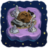

Получено: файл; исходный URL. Иллюстрация каталога. Архив мог вернуть снимок файла другой даты — она указана в ссылке на полученный файл; общие картинки и авторство требуют проверки. Страница: источник.
Зомбикрон
историческая браузерная версия ВКонтакте; редакция неизвестна- Тип
- Космическая локация
- Версия и дата
- историческая браузерная версия ВКонтакте; редакция неизвестна
Данные по источнику · историческая социальная версия VK; редакция неизвестна · 08.11.2018 — публикация, дата последующей редакции неизвестна
Предварительно: Фанатский справочник, актуальность и независимость от других источников не установлены.. Требуется сверка.
- Описание
- По описанию источника на астероиде должны быть обломки старой Машины времени.
- Доступ
- Космическая пристань (№827) или Телефонная будка (№819).
- Объекты
- Антенна, Космическая пристань (№828), Обломки, кости, кратеры, трава, камни, деревья, Космическая капсула. Источник объединяет объекты, которые можно найти или поставить, не различая способы.
- Задание
- «Космодороги» — упомянуто на странице, цели не указаны; совпадение одноимённых квестов не проверено.
Данные по источнику · историческая социальная версия VK; редакция неизвестна · 07.10.2018 — публикация, дата последующей редакции неизвестна
Предварительно: По отдельной статье Телефонной будки; современная доступность не подтверждена.. Требуется сверка.
- Стоимость через Телефонную будку №819
- 1 микросхема, 30 000 монет и 5 золотой пыли. Для другого способа перемещения стоимость и условия могут отличаться.


Данные по источнику · браузерная «Зомби Ферма» / «Зомби Мания»; платформа не уточнена · снимок каталога 10.12.2019; дата редакции неизвестна
Предварительно: Фанатский каталог; возможны общие картинки для разных локаций и зависимость от других источников.. Требуется сверка.
- Каталог
- В разделе «Новые Острова в игре» указана локация «Зомбикрон».
- Оговорка
- Каталог показывает название, картинку и ссылку; отдельная статья по этой ссылке не прочитана в рамках этого импорта. Условия доступа и версии требуют проверки.
- Сравнение снимков
- Эта же подпись, раздел и адрес картинки присутствуют в снимке того же каталога 14.09.2018; это не независимое подтверждение.
Связанные сущности
нет проверенных связей — требуется сверка.